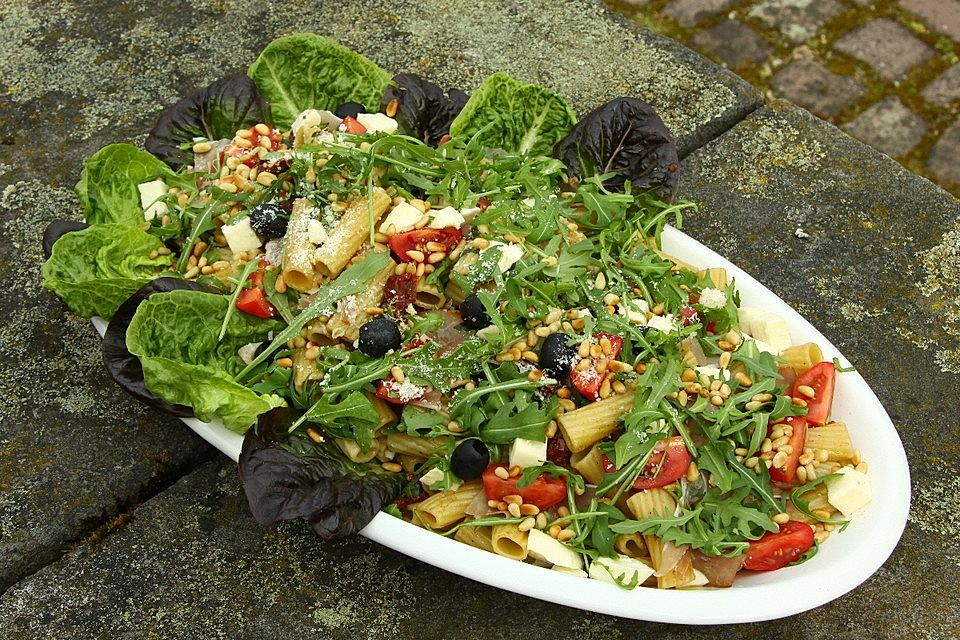

Italienischer Nudelsalat

Dieser Nudelsalat eignet sich ideal für einen sommerlichen Grillabend.
ohne Majonaise ist dieser Salat leichter als herkömmliche Varianten
Als Grundlage dienen Fussili und Rocula, verfeinert mit getrockneten Tomaten, Mozzarella, Parmesan und Pinienkernen
Zutaten
- Rocula
- Nudeln
- Tomaten (frische und getrocknete)
- Mozzarella
- Pinienkerne
- Pesto Genovese
- Honig
- Senf
- Olivenöl
- Weißwein Essig
Zubereitung
- Nudeln in Salzwasser garen
- Gemüse waschen und in mundgerechte Stücke schneiden
- Für die Soße, Pesto Genovese, Honig, Senf, Essig und Olivenöl zu gleichen teilen mischen
- Alles in eine große Schüssel geben, die NUdeln unterheben und mit Salz und Pfeffer abschmecken
Zurück zur Startseite